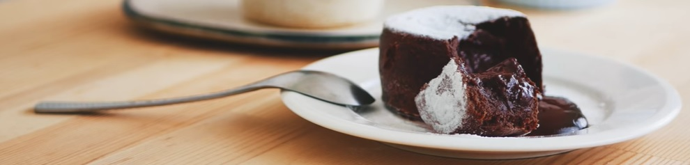

在烤盅裡塗上薄薄的一層無鹽奶油，然後均勻地灑上麵粉，最後再敲掉多餘的麵粉，兩個烤盅都送進冰箱冷藏備用(最少冰10分鐘)
把市售的巧克力切成小塊狀
取一個耐熱的容器，加入切碎的巧克力跟無鹽奶油，隔水加熱至完全融化並攪拌均勻，要留意不要過度加熱，完成後置於一旁備用
起另一個打發盆，加入一顆雞蛋、細砂糖跟香草精，用打蛋器打至顏色泛白、些許濃稠，這裡不要過度打發
把先前融好的巧克力奶油糊慢慢地倒入蛋糊裡，同時輕輕的攪拌，直到所有材料完全混合均勻(不要太快，以免熱的巧克力醬會讓雞蛋結塊或成為蛋花湯)
將麵粉過篩後加入巧克力與雞蛋糊裡，也是要手法輕巧的拌到看不見乾粉即可
把巧克力麵糊倒入烤盅至八分滿，輕敲幾下敲出空氣
烤箱預熱200度C，烘烤 8～9 分鐘
出爐後，讓熔岩巧克力蛋糕在烤盅裡放涼 3～5 分鐘，然後趁熱倒扣在盤子上
端上桌前灑點糖粉
